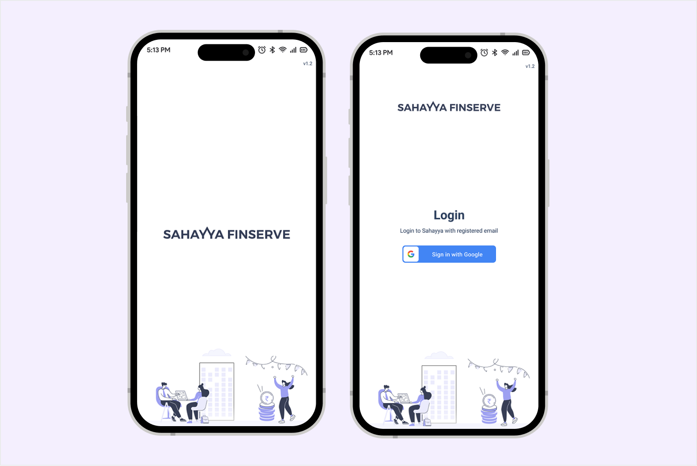
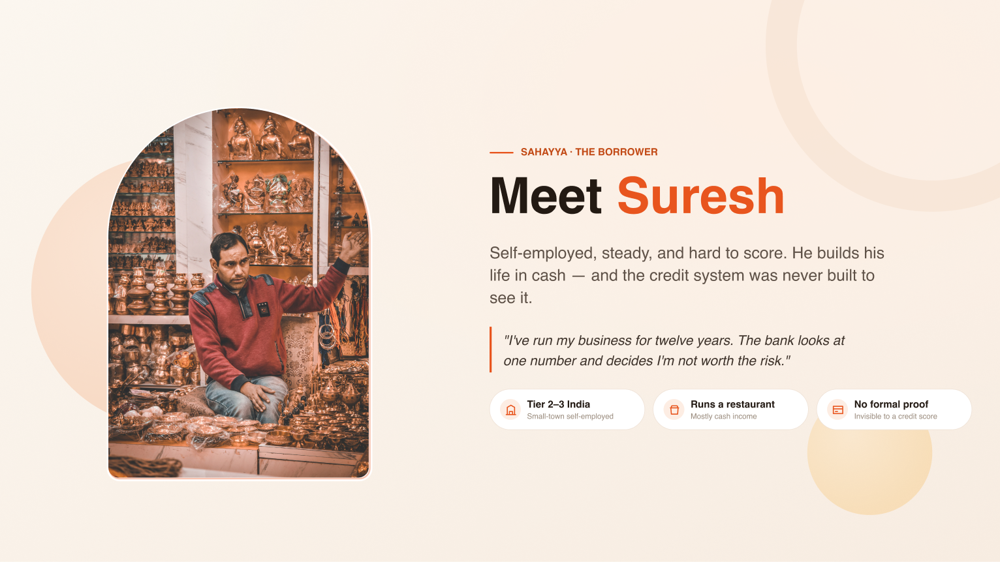
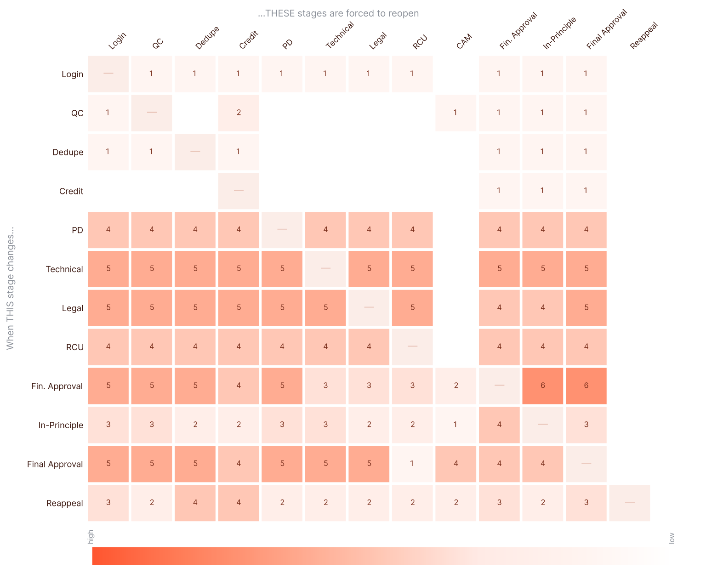
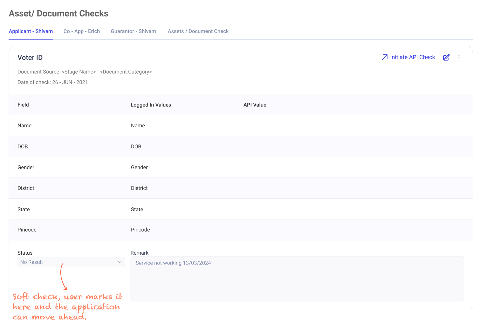
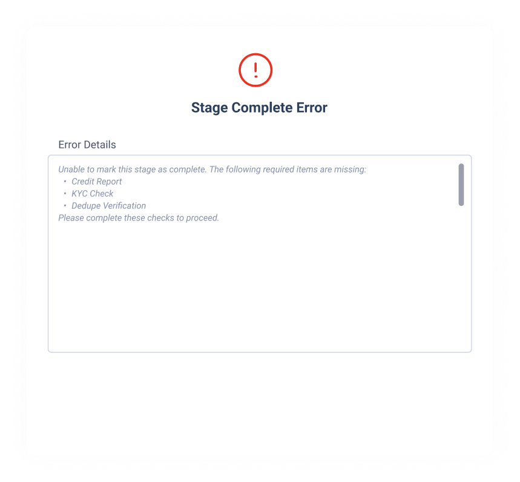

Enterprise app • UX Design • Fintech
How did I reduce loan processing time from 10 days to 4?
Designing an end-to-end loan origination system for India’s self-employed borrowers.

Introduction
A lender built for India’s self-employed group.
Sahayya is a Bangalore-based home-loan company lending to India’s self-employed, borrowers whose income is hard to verify and who most banks turn away. It works with major banks like HDFC and Axis, underwriting home loans on their behalf.
The Customer

The borrower — a credit score can’t see.
Sahayya lends to self-employed borrowers in tier 2–3 India who need financing quickly to build a house or grow a business. Their income is hard to verify and their credit score rarely reflects how they actually earn, so most banks turn them away. Reaching them means meeting them where they are, on their terms.
The Research

The process on paper, and the process in the field.
To design the system, I first had to see how the loan process really ran. I started with a full walkthrough, on paper it was a clean pipeline from lead to disbursal, but underneath it was a web of dependencies: credit-check APIs that failed with no retry, bank-statement analysis that only read PDFs, and a risk check that could reopen a file even after the loan was paid out.
The bigger lesson came in the field. I shadowed the Sales Head, as he visited a restaurant owner applying for a loan, and the tidy process diagram fell apart in front of me. He never opened a form. He talked the owner through his sales, seasons and expenses while reading the room to verify the answers, did his sums on paper, and judged the risk on instinct. There was no network, the questions jumped around as the conversation moved, and much of what the loan needed simply wasn’t there on the spot.
The Problems
Three questions the design had to answer.
The research made the real problem clear. It wasn’t speed. A single application held 1,200+ hand-keyed fields, captured offline and out of order across a 13-stage pipeline that leaned on outside services for credit checks, OCR and bank data. One late error could send the file back to the start, and one downed service could stall it completely.
- How might we stop errors at the source when 1,200+ fields are entered by hand?
- How might we keep a loan moving when a third-party service goes down, so one failed API doesn’t stall the whole process?
- How might we keep 13 interdependent stages consistent and compliant while several people work the same file?
Solution 01
Stopping bad data at the source.
The goal was simple: let the agent confirm data, not type it.
Verified data, pulled from the document. We integrated an external service that returns authentic customer details from a scanned IDs. The agent uploads a document, say a driving licence or passport, the service reads its type, and it sends back the record it holds: name, photo, date of birth and address. The agent checks it instead of keying it in, so the data is verified at the source rather than typed by hand.
Defaults fill the rest. Fields that can be inferred fill themselves. A pincode brings in its city and state, the agent’s branch and manager are already set, and the most common product is pre-selected. Every field that fills itself is one less chance to fumble a digit.
Solution 02
Keeping thirteen stages in sync.

The 13 stages weren’t a checklist; they were a web. Correcting a KYC detail in the first stage could quietly invalidate a credit decision three stages later, and with several people touching a single file, no one could keep track of all those dependencies in their heads.

So I mapped every stage against every status, 13 by 7, and wrote the rule for each one: when this changes, here is what has to reopen. That came to 91 rules, written one by one. Once they were in the system, it did the remembering. When a change triggered a rule, the affected stage reopened automatically, logged the reason, and notified its owner. Compliance stopped depending on anyone’s memory and became part of how the system worked.
Solution 03
Keeping loans moving when a service goes down.
Some data comes from outside services, like the credit score pulled in stage two, and those services go down. Blocking the whole loan for something outside Sahayya’s control wasn’t acceptable, but neither was letting a loan reach disbursement with data missing. So we graded the checks by what was at stake.

Soft check — the user marks it here and the application can move ahead.
Soft checks keep the work moving. Inside a stage, an agent can complete every step even if an outside value hasn’t come back yet. To mark the stage as done, the system looks for that value; if it isn’t there, the agent records why, marks it as not available, and moves on to the next stage. A downed service slows one field, not the whole file.

A hard gate before disbursement. The final step is the exception. Before a loan can be marked ready for disbursement, every required value has to be present, with no bypass. Missing data can be deferred along the way, but never skipped.